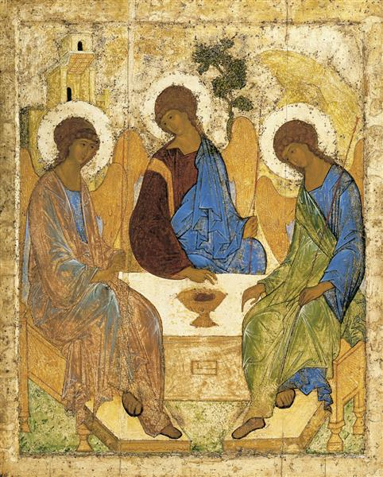
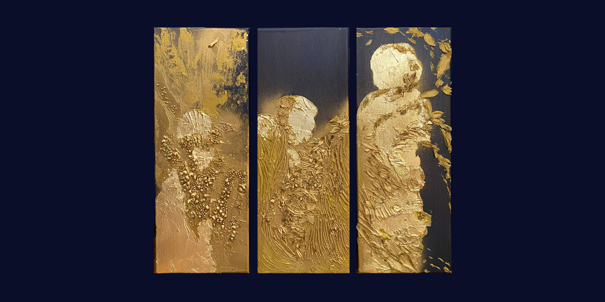
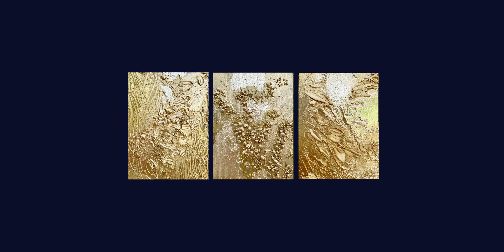
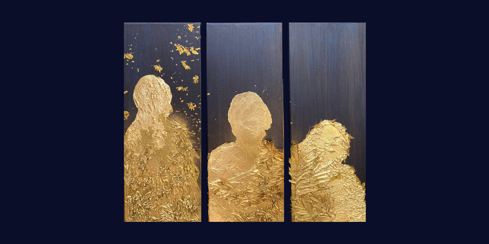
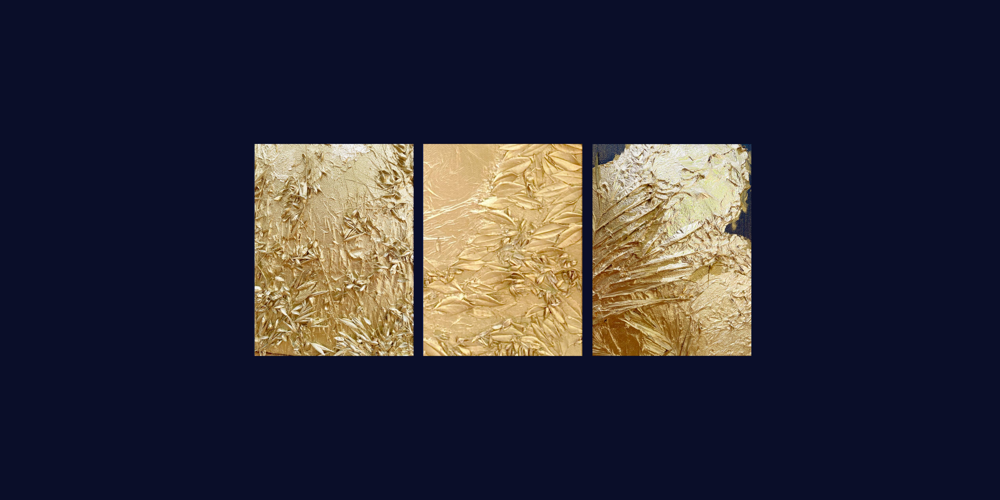

Dans le ciel il n’y a personne. - A. Tarkovski
Prahy - Seuils - Пределы - Yesod

Le dialogue avec l’icône est un approfondissement
de la pénétration dans le Mystère, et non une tentative
instantanée de parler soudain une langue étrangère,
en consultant constamment un dictionnaire.
- S.A. Averintsev
- S.A. Averintsev
Andrei Roublev
1410 - 1427
142 × 114 cm
Tempera sur Toile
Trinité
1410 - 1427
142 × 114 cm
Tempera sur Toile
Trinité
2024 - 2026

Natalia Stavrovskaja
Paris 2026
20 × 50 cm
Peinture Acrylique / Medium / Divers sur Toile
Paris 2026
20 × 50 cm
Peinture Acrylique / Medium / Divers sur Toile

Détail texture
Prahy 1 (Seuils)
Trinité de l’hospitalité d’Abraham
Soudain Abraham vit trois hommes debout près de lui. Il courut à leur rencontre, s’inclina jusqu’à terre et dit : « Je t’en prie fais-moi la faveur de t’arrêter chez moi. On va apporter un peu d’eau pour vous laver les pieds puis vous vous reposerez sous cet arbre. »
Les visiteurs répondirent : « Fais ce que tu viens de dire. » — Genèse 18, 1-14

Natalia Stavrovskaja
Paris 2026
20 × 50 cm
Peinture Acrylique / Medium / Divers sur Toile
Paris 2026
20 × 50 cm
Peinture Acrylique / Medium / Divers sur Toile

Détail texture
Prahy 2 (Seuils)
Trinité de la Sainte Sophie
Foi, Esperance, Charité Par « théologale », il faut entendre : « ayant Dieu pour objet ». Ces vertus disposent les hommes à vivre en relation avec Dieu. Au ciel, seule la charité subsistera, sous la forme de la vision directe de Dieu. Elles adaptent les facultés de l’humanité à la participation de la nature divine, et elles sont dites surnaturelles en ce qu’elles sont fondées sur la grâce.